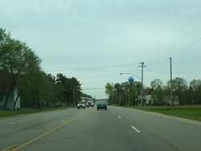

Three
residents of Arena,
Wisconsin posted critical and provocative messages on the
Facebook page of the local
police department. All of those comments were purged by the
officer who administered that page. Only one of them, however,
resulted in criminal charges.
Thomas Smith was arrested and charged with “disorderly conduct” and “unlawful use of a computerized communication system” in a fashion that “tended to cause a disturbance.” Following a brief and perfunctory trial in which Smith's written comments were the only “evidence” used against him, the 23-year-old was convicted and sentenced to a year of probation and 25 hours of “community service.”
Thomas Smith was arrested and charged with “disorderly conduct” and “unlawful use of a computerized communication system” in a fashion that “tended to cause a disturbance.” Following a brief and perfunctory trial in which Smith's written comments were the only “evidence” used against him, the 23-year-old was convicted and sentenced to a year of probation and 25 hours of “community service.”
Smith's
conviction was
overturned roughly a year later by the Wisconsin Court of Appeals.
This gave rise to the
inevitable civil rights lawsuit, which which
last week produced a $35,000 settlement underwritten by the
productive people sentenced to reside within Arena's tax
jurisdiction.
The
settlement would probably be enough to cover Smith's legal expenses.
It certainly wouldn't be adequate compensation for a three-year legal
ordeal orchestrated by petulant, power-intoxicated police officers
and city prosecutors who pretended to be enforcing community
standards, rather than engaging in transparent retaliation against a
critic. In addition to serving a day of pre-trial detention, Smith
was subjected to bail conditions that denied him use of a computer or
a cell phone for any non-employment-related purpose, and as a
condition of bail he was required to share his passwords with the
Iowa County Sheriff's Office.
In
substantive terms, Smith was subjected to a form of probation as
punishment for an “offense” that had yet to be proven.
| Arena PD Chief Lonnie Drinkall (r.). |
The
comments that prompted the malign attention of the Arena PD were
posted on a July 20, 2012 Facebook thread in which department
announced the arrest of three African-American males suspected of
trespassing and breaking into homes in the village the previous day.
Reacting to previous comments that had been critical of the
department's performance – an important point to which we will
return -- Smith posted two brief contributions in which he gave
unfiltered (and ungrammatical) expression to his views regarding law
enforcement and race relations.
“F**k
the f***ing cops,” Smith opined. “They ain't sh*t. But f***ing
racist bastards and f****g y'all who is racist. F**k them n****rs
policy b*tches. What the you got on us? Not a dam thing so f**k off
d*cks.”
During
the trial, defense attorney Thomas Aquino pointed out that the
defendant “ is not accused of hitting someone or stealing anything.
What he is accused of is writing some words on Facebook.” Yes,
Aquino acknowledged, the words were “uncivil” and even “naughty,”
but posting them wasn't a crime.
Rising
from his fainting couch and primly clasping a handkerchief to his
breast, Iowa County Assistant District Attorney Matthew Allen
insisted that by writing those comments Smith had not engaged in
“constitutionally protected speech,” but rather in “indecent,
profane and boisterous conduct” that was an incitement to a public
“disturbance.”
“In
this day and age … where more communication is done by e-mails and
texts and social media it's all the more important that standards be
enforced with respect to written comments such as the ones posted by
Mr. Smith,” Allen piously admonished the jury, urging them not to
allow the author to “evade accountability.”
| Arena PD Officer Stroik with a fellow LEO. |
Smith's
comments were discovered two days after they were posted by Officer
Nicholas Stroik, who served as the administrator for the department's
Facebook page. Stroik, predictably, made a hard copy of the offensive
post and then deleted it from the page. Significantly, he also
deleted negative comments posted by Arena residents Kim Marks and
Dana Willey, both of whom also accused – albeit in more oblique
fashion – the department of racism. In fact, they had made those
accusations before Smith happened upon the Facebook thread.
Marks
and Willey “did not use profanity,” Allen pointed out to the
jury. “They did not use the `n-word,' no vulgar comments or attacks
[were involved], and that's why we're here prosecuting Mr. Smith's
post.”
Allen
insisted that Smith had written his comments with the purpose of
“intimidating” the bold and valiant paladins of public order who
patrol the forbidding streets of Arena, Wisconsin – two square
miles inhabited
by about 800 people whose ethnic homogenity makes the Osmond
family look like the United
Colors of Benetton.
Now,
I grant that no amount of body armor adequate to protect the uniquely
vulnerable egos of police officers who are targeted for abuse and
ridicule. This is why we are told that growing – and still
woefully inadequate – public criticism of law enforcement is
nothing less than a “war on police,” and that high-profile
criticism of cops is akin to ISIS-caliber terrorism.
Even
if we accept that premise as applied to Smith's Facebook postings,
however, we're left with the insurmountable fact that Thomas's
comment was not primarily directed at the police. He was replying to
the previous remarks published by Marks and Willey, who had
introduced the subject of race into the discussion. That critically
important fact fell victim to the prosecutor's skillful misdirection.
Smith's
splenetic outburst protested what he perceives to be the ubiquitous
plague of racism, which he considers especially acute among police
officers. Rather than threatening the police, Smith's comments urged
them – using language of the kind that routinely emerges from the
tax-devouring gullets of police officers – to leave him alone.
The
observations offered by Marks, on the other hand, were forthrightly
contemptuous of the Arena police.
Marks
began that discussion by offering a sarcastic “You're so very
welcome” to the statement from the Arena PD thanking local
residents for helping to apprehend the suspects.
“Thanks
for searching my house and accusing me of harboring so-called
dangerous fugitives that I don't even know,” she continued.
“Wasting time searching people's houses when the fugitives were no
where near there. And since when is it okay for a resident to point a
gun at a couple of kid's heads? If that was anyone else's kids [I'm]
pretty sure it would be a big deal. Oh, wait though. They were black
so it's okay. Thanks to everyone that made our town look like nothing
but a racist, prejudice[d] place to live. I'm embarrassed to say I'm
part of that kind of community. If I were black, I'd run, too.”
“And
don't anybody say it isn't about race because it is when I ask the
cop specifically what they look like and his response is they will
stand out because they don't belong here,” Willey replied a few
minutes later.
As
ADA Allen pointed out, neither of those posts contained vulgarity or
racial epithets. They did, however, contain what could be
characterized as “attacks” on the professionalism, competence,
and integrity of the police department, in addition to overt
accusations of racial bias. This is why Officer Stroik removed them
from the comment thread, while preserving several others that were
laudatory. Since this was done by a government agency, that selective
deletion must be regarded as content-specific censorship of citizen
complaints.
Shortly
before closing arguments, Judge William Dyke sent the jury out to lunch while
he considered – in the most perfunctory fashion imaginable – a
motion for summary judgment from defense attorney Thomas Aquino. Dyke
batted away Aquino's argument that Smith had engaged in protected
political speech by ruling that “there was a display of hostility,
provocatory [sic] language and inciting or inviting controversy,
inviting what would appear as the messages progressed to be
intending to incite illegal behaviors. That it held the community and
the police up to ridicule and contempt and contumely....”
(Emphasis added.)
Judge
Dyke was clearly holding Smith solely responsible for “incitement”
during a conversation in which all three participants displayed
potentially provocative and inciteful “hostility” toward the
Arena Police.
Recall
that Marks, who is white, described herself as “embarrassed” to
live in a community that could be perceived as racist. Furthermore,
by her own admission, she deliberately cast aspersions on the police
department. During her
brief testimony in Smith's trial, Willey explained that she wrote
her critical comment “because I didn't think that the Arena Police
Department did a very good job in locating the suspects when the
citizens of Arena are the ones who actively detained them.”
All
three of the negative Facebook comments met Judge Dyke's definition
of unprotected, disorderly “electronic communications” – a
standard that does not require the use of profane language. Yet after
he deleted all three of those messages, Officer Stroik focused only
on the one posted by Smith.
Twenty
minutes after Stroik excised the comments from the Facebook page,
Smith was contacted by Officer
Nicholas Zimpel, who “invited” the twenty-two-year-old to
visit the Arena PD headquarters to “discuss” the post. Zimpel
didn't bother to disclose that Stroik had filed a six-count criminal
complaint against him. At the time, Smith was headed to the Milwaukee
County Fair and – as his Facebook post made clear – he
understandably had no interest in having anything to do with the
police. Determined not to allow “contempt of cop” to go
unpunished, the Arena police materialized at Smith's home the
following day and placed him under arrest.
 |
| The pitiless streets of Arena, Wisconsin. |
Both
Marks and Willey, who had publicly ridiculed the Arena PD and accused
it of racism, were known to the police, yet Stroik simply deleted
their comments rather than pressing charges. By focusing exclusively
on Smith, a young black man, the department arguably validated those
accusations.
Predictably,
the prosecution in Smith's trial, anticipating an appeal, implanted
the notion that the Facebook post constituted “fighting words”
and was thus a form of criminal conduct. They were probably aware
that the claim was facially absurd.
“I
agree with the State that context matters, but the facts of this case
do not persuade me that Smith’s comments had a tendency to incite
an immediate breach of the peace by others against the police,”
wrote Judge
Paul Lundsten on behalf
of the Court of Appeals. “The State’s argument and supporting
evidence are simply too vague as to who Smith’s comments would have
incited and what immediate breach of the peace might have resulted.”
Even
if Smith's comments had found a receptive audience in Arena, the
torpid hamlet doesn't have a population large enough to generate a
riot. However, five of its residents belong to that segment of
society claiming the right to initiate violence and escalate it until
those thus targeted either submit or die – and it was those
state-licensed practitioners of coercion who committed a breach of
the peace by abducting Smith at gunpoint.
| Police in Evansville, Indiana respond to a "provocative"social media comment. |
Thomas
Smith, who eventually received modest compensation for his suffering,
is one of a growing number of citizens who have
faced retaliation by police for critical comments made through social
media. Impudent Mundanes have been targeted by orchestrated
police union campaigns intended to
destroy the livelihood, hit with felony “witness
intimidation” charges, and even prompted no-knock
SWAT raids.
It's
worth noting that although locating and detaining three young men
suspected of property crimes was beyond the competence of the Arena
PD, the department was a model of efficiency in tracking down and
arresting a harmless fellow who had posted an offensive note on their
Facebook page. In that contrast we see a splendid example of the
institutional vanity of government law enforcement – and a good and
sufficient illustration of why we would be much better off without
it.
If you can, please donate to help keep Pro Libertate online. Thank you so much!
Dum spiro, pugno!